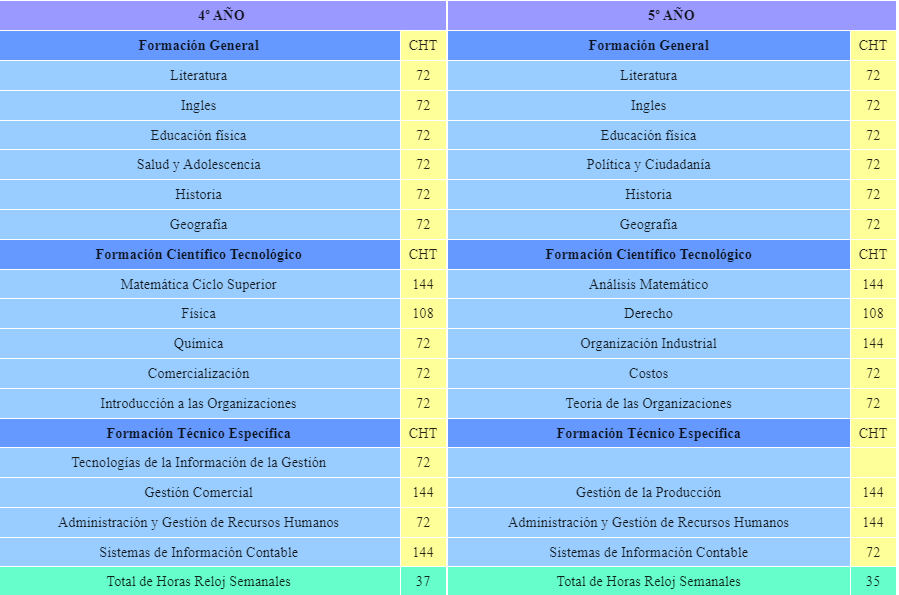

Técnico en Administración de las Organizaciones

El técnico en Administración de las Organizaciones al terminar sus estudios estará capacitado para administrar eficientemente recursos e insertarse profesionalmente en todo tipo de organizaciones, adaptándose al cambio creciente de tecnologías y mercados a través del desarrollo de un perfil profesional proactivo e innovador.
Areas de Competencia
Elaborar e implantar políticas, sistemas, métodos y procedimientos de administración, finanzas, y comercialización cubriendo diferentes necesidades del mercado laboral.
Desempeñar funciones en áreas de Recursos Humanos, producción, manejo de presupuestos, finanzas, en el comercio interior y exterior.
Ser capaz de seleccionar, diseñar y utilizar diversos recursos para obtener nuevos resultados en relación a la administración de los elementos organizacionales.
Tener una actitud crítica y flexible a partir del conocimiento y la práctica que le permitirá realizar esquemas administrativos útiles para desarrollar eficientemente la administración de la organización.
Estructura Curricular ADO


Técnico en Informática Personal y Profesional
El técnico en Informática Personal y Profesional estará capacitado para desarrollar las competencias generales y especificas para: montar e instalar, operar y mantener los componentes, productos, equipos e instalaciones informáticas y electrónicas.
Asimismo podrá realizar proyectos, diseños y desarrollos, de diversa complejidad y tecnologías.
Areas de Competencia
Facilitar la operatoria y asesorar al usuario, en la operación y aprovechamiento de la funcionalidad de los equipos y programas.
Mantener la integridad de los datos locales del usuario y la eficiencia de su acceso.
Instalar y poner en marcha equipos de computación y redes, componentes, programas y sistemas, o funcionalidades adicionales de los mismos.
Mantener componentes de equipos de computación y comunicaciones, programas y sistemas.
Organizar el ambiente informático de trabajo del usuario y desarrollar programas, o adaptar y complementar sus funcionalidades, utilizando las herramientas puestas a disposición de los usuarios por los originadores de los sistemas.
Técnico en Programación

El Técnico en Programación está capacitado para resolver los diferentes problemas que se presenten en el ejercicio de su profesión. Permiten al estudiante realizar actividades dirigidas a: analizar, diseñar, desarrollar, instalar y mantener software de aplicación tomando como base los requerimientos del usuario.
Areas de Competencia
Participar en proyectos de desarrollo de software desempeñando roles que tienen por objeto producir programas o módulos de un sistemas de información.
Desarrollar y mantener programas de software de complejidad media (sitios web estáticos y dinámicos con utilización y manejo básico de sistemas de base de datos).
Crear, mantener y utilizar bases de datos elementales.
Realizar actividades de testeo de software de aplicaciones para garantizar su óptimo desempeño.
Redactar documentación técnica (manual de usuarios, diccionario de datos, entre otros.)
Instalar, configurar y actualizar Aplicaciones.
Investigar, analizar y aplicar técnicas actuales de diseño y codificación.